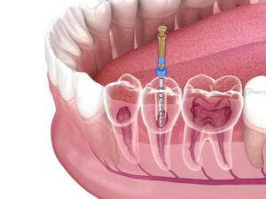
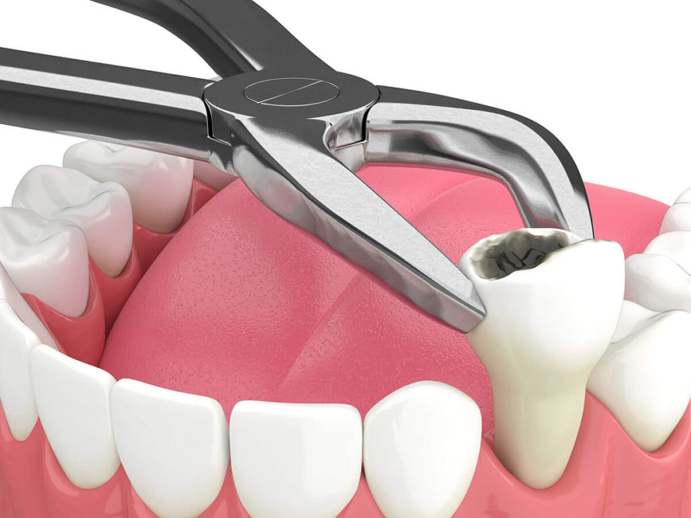

Treatments
Treaments At Jain Dental Clinic
Your smile is your most powerful asset, At Jain Dental Clinic by DR Mahak we’re here to make it shine. Our skilled dentists DR Mahak offers a full range of services, from routine check-ups and cleanings to advanced cosmetic procedures. Whether you’re seeking teeth whitening for a dazzling smile, porcelain veneers for a flawless finish, or dental implants for a permanent solution to missing teeth, we have the expertise to transform your smile into your greatest confidence booster.
We Provides:
-
Implant
Dental implant systems consist of a dental implant body and dental implant abutment and may also include an abutment fixation screw. The dental implant body is surgically inserted in the jawbone in place of the tooth's root. The dental implant abutment is usually attached to the implant body by the abutment fixation screw and extends through gums into the mouth to support the attached artificial teeth.
-

Root Canals
A root canal is performed when the endodontist removes the infected pulp and nerve in the root of the tooth, cleans and shapes the inside of the root canal, then fills and seals the space. Afterward, your dentist will place a crown on the tooth to protect and restore it to its original function.
-
Extractions
A dental extraction (also referred to as tooth extraction) is the removal of teeth from the dental alveolus (socket) in the alveolar bone. Extractions are performed for a wide variety of reasons, but most commonly to remove teeth which have become unrestorable through tooth decay, periodontal disease, or dental trauma, especially when they are associated with toothache
 -
Dental Varnish
Dental or Fluoride varnish is safe and used by dentists and doctors all over the world to help prevent tooth decay in children. Fluoride varnish helps prevent new cavities and can help stop some cavities that have just barely started.
-
Tooth Fillings
A Filling is used to treat a small hole, or cavity, in a tooth. To repair a cavity, a dentist removes the decayed tooth tissue and then fills the space with a filling material. A filling is a way to restore a tooth damaged by decay back to its normal function and shape.
-
Full Dental Examination
In a full dental exam, we checks each tooth carefully, looking for discoloration, plaque and damage. We also uses this opportunity to look at any cavities, fillings and prior dental work.
- Teeth Whitening
- Dental Aligners & Braces
- Oral surgery
- Gum Disease Treatment & other dental treatment.

Other treaments are: